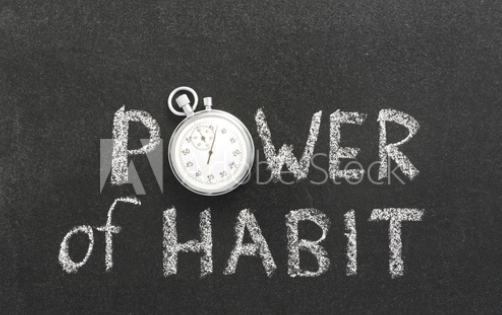
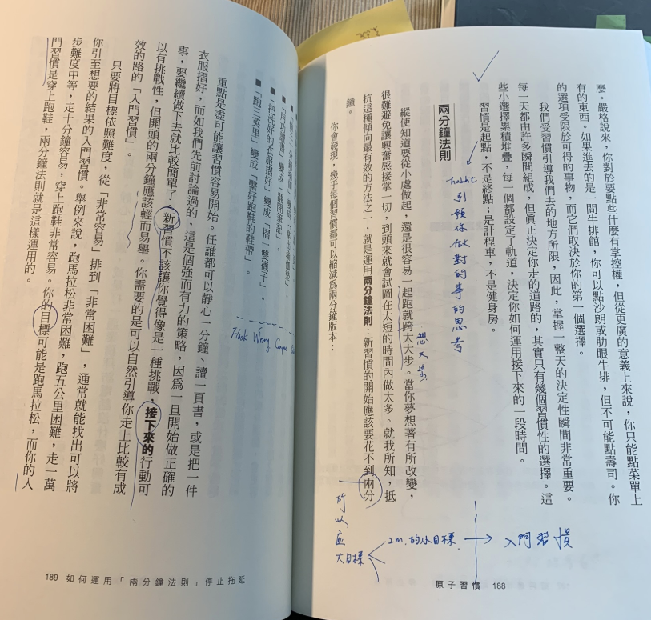
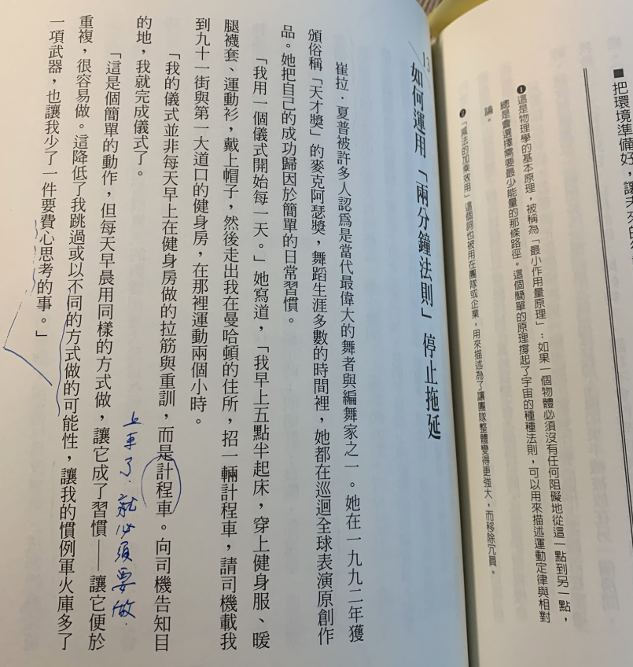
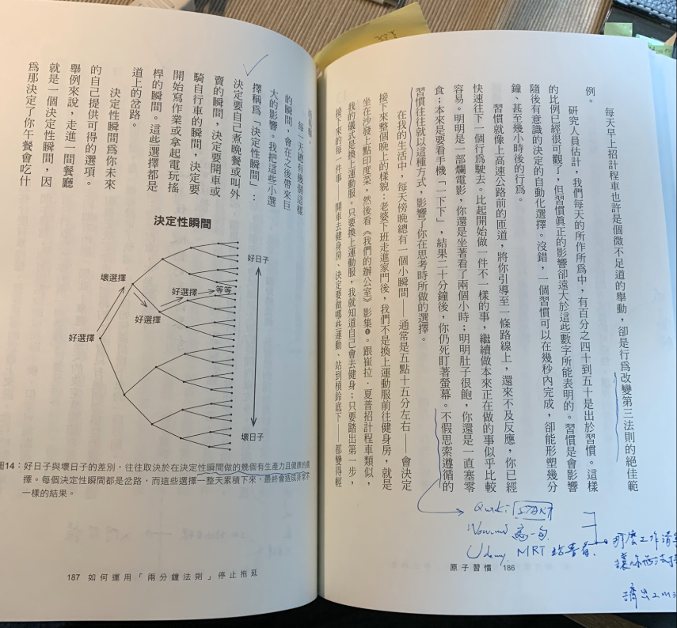
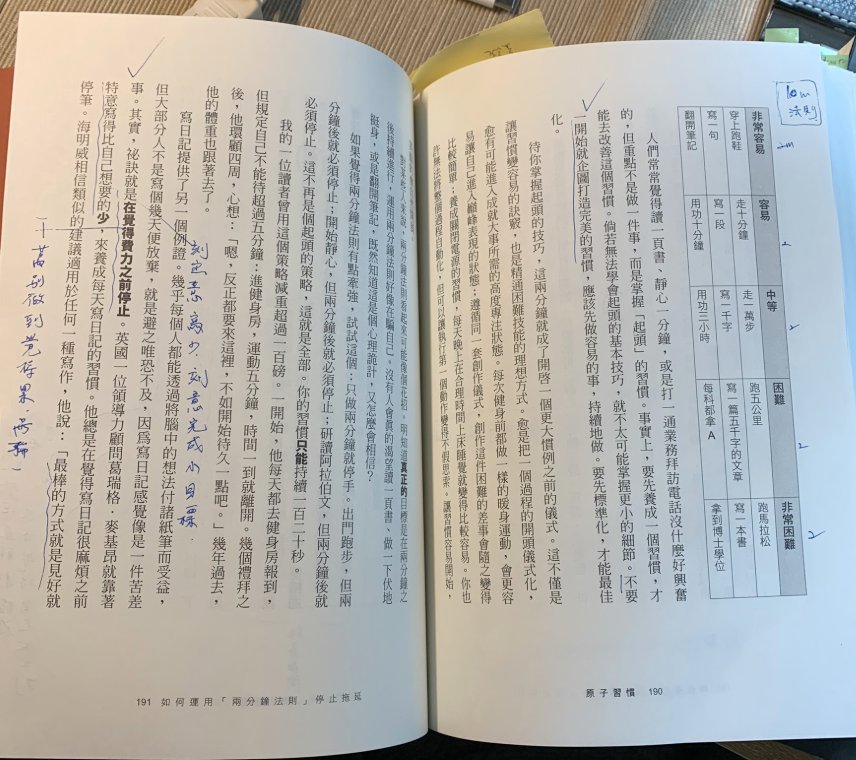
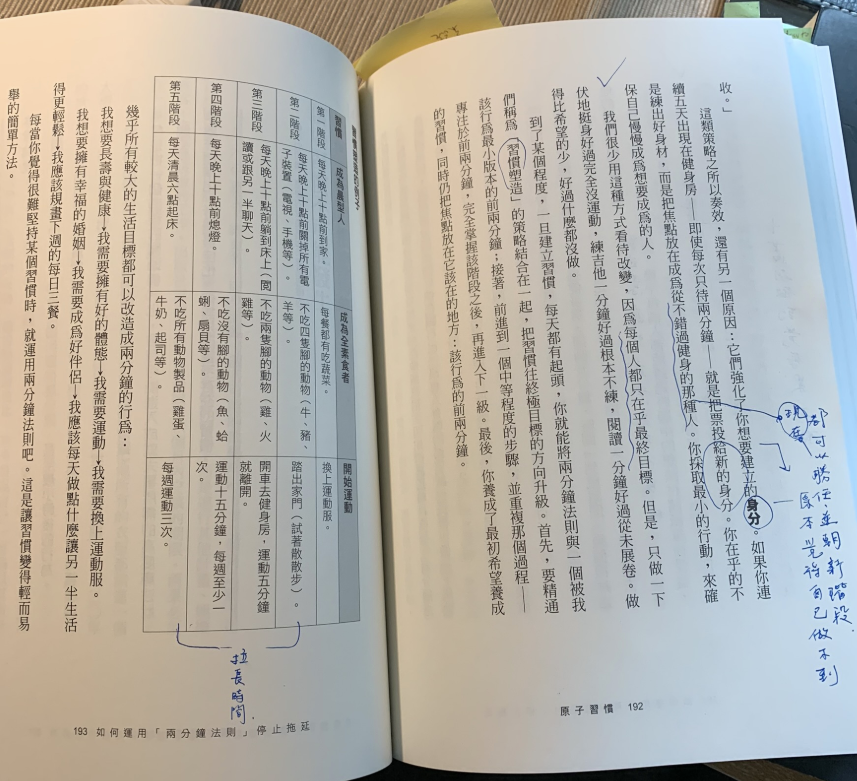

[啟發] 2分鐘法則才能持之以恆 | 2 Minute Rule Makes Dreams Happened
Status: Published
<原子習慣>是今年的暢銷書，網路上已有多數的書評和心得分享，皆是環繞在這四大流程(提示、渴望、回應、獎賞)，直到我到書店實際翻一下，看到這個章節，它提出的概念更契合我心，當場就直接將書買回家
目標看得太遠
即使知道做事要從小處做起，還是很容易一起跑就跨大步、爬山僅需記得眼前的台階，而非山頂。很多人失敗的原因，都是一開始就把目標看得太遠，反而忘記眼前必須完成的事情。
知所以會如此，是因為當你夢想著有所改變，很難避免讓奮興感接掌一切，到頭來就會
試圖在太短的時間內，做太多的事
新習慣只需二分鐘
書中則提到可以扺抗這種傾向最有效的方法，就是運用二分鐘法則：新習慣的開始應該要花不到兩分鐘。
以下舉的例子，你會發現幾乎每個習慣都可以縮減為兩分鐘的版本(有點萬事開頭起頭難的感覺)：
- 「運動強身」變成「穿上球腳」
- 「用功讀書」變成「打開筆記本」
- 「把洗好的衣服摺好」變成「先摺好一件衣服」
- 「想要早起」變成「先離開床邊站起來」
重點是盡可能讓習慣容易開始，任誰都可以靜心一分鐘、讀一頁書，或是把一件衣服摺好，如我們先前討論過的，
這是個強而有力的策略，因為一旦開始做正確的事，要繼續做下去就比較簡單了。

有一個很重要的概念，就是不應該讓新習慣覺得像一種挑戰。接下來的行動可以有挑戰性，但開頭的兩分鐘應該是輕而易舉，但又總是做不到？原因是什麼？
你要做的是可以引導進入比較有成效的「入門習慣」。作法只要將目標依照困難度，「非常輕易」排到「非常困難」，如此就可以幫你引導到你想要的「入門習慣」
跑馬拉松目標 → 入門習慣
對於一個初入跑馬拉松，全馬這個目標是42km 很堅「難」，跑半馬也「不簡單」，但我們先換成快走個1萬步，應該就相對「容易」吧，但這個你要做的第一件是穿上跑鞋，這就是所謂的入門習慣，也就是「兩分鐘法則」。
如何運用「2分鐘法則」停止拖延
Tharp, Twyla | 崔拉‧夏普是當代偉大的舞者與編舞家，她把成功歸因在簡單的日常習慣，換句話說規律成就了她的一生。
「我用一個儀式開始每一天」。她解釋到「我早上五點半起床，穿上健身服、暖腿套、運動杉，戴上帽子，然後走出我在曼哈頓的住所，招一輛計程車，請司機載我到健身房，在那裡運動二個小時。」
我用的儀式並非每天早上在健身房健身，而是計程車。向司機告知目的地，我就完成儀式了
這是簡單的動作，但每天早晨用同樣的方式開啟新的一天，讓它成了習慣，讓它便於重復，重點就是要讓它很容易做。這項儀式讓她降低了我跳過或以不同的方式做的可能性，讓我的慣例軍火庫多了一項武器，也讓我少了一件要費心思考的事。」(它的意思是說，有了「搭計程車」起始動作處理掉做選擇時「分神」的問題，避免自已找各種理由不去健身)
目標簡單一點，才是前進動能
每天早上招計程車也許是個微不足道的舉動，卻是行為改變第三法則的絕佳範例。研究人員估計，我們每天的所作所為中，有40% - 50% 出於習慣。這樣的比例已經很可觀了，但習慣真正的影響卻遠大於這些數字所能表明的。
習慣是會影響隨後有意識的決定的自動化選擇。沒錯，一個習慣可以在幾秒內完成，卻能形塑幾分鐘、甚至幾小時後的行為。
習慣就像上高速公路前的匝道，將你引導至一條路線上，還來不及反應，你已經快速往下一個行為駛去。比起開始做一件不一樣的事，繼續做本來正在做的事似乎比較容易。(原本起手難，現在變成抽離難，這就是人性阿)
一開始就想要完美
人們常常一開始就企圖打造完美的習慣，但這個邏輯順序是不對的，應該要先做容易的事，並持續的做。所以要先標準化，才能最佳化。
從簡單的事下手：
這邊作者舉例
- 穿上跑鞋(非常容易) → 走十分鐘(容易)→ (中等)→ 跑5公里(困難)→ 跑全馬(非常困難)
- 寫一句(非常容易) → 寫一段(容易)→ 寫一千字(中等)→ 寫一篇五千字(困難)→ 寫一本書(非常困難)
- 翻開筆記本(非常容易) → 用功十分鐘(容易)→ 用功三小時(中等)→ 每科都拿A(困難)→ 拿到博士學位(非常困難)
刻意練習
把上面舉的例子有運動，寫作，攻讀學位，我把它
結合兩分鐘理論與暢銷書<刻意練習>
它的公式應該是刻意完成”小”的目標。
這邊在提供一個寫日記的例證。幾乎每個人都曾想培養此習慣，但大部份的人不是寫個幾天便放棄，就是避之唯恐不及，因為把寫日記當作是一個苦差事。其實秘訣就是在覺得費力之前停止，儘能割切好你的小目標，一定要刻寫得比自已想要得”少”，這點太重要了。英國一位知名顧問蓋瑞格‧麥基昂就是靠著”意識寫少”，來養成每天寫日記的習慣，他總是在覺得寫日記很麻煩之前停筆。
海明威對於寫作也有相同的見解，他說：「最棒的方式就是見好就收。」
建立新的身份
“白話一點 → 期望自己想要變成那樣的人”
這類策略之所以奏效，還有另一個原因：它們強化了你想要建立的身份。如果你連續五天出現在健身房，即使每次只待兩分鐘，就是把票投給新的身分。你在乎的不是練出好身材，而是把焦點放在成為從不錯過健身的那種人。你採取最小的行動，來確保自己慢慢成為想要成為的人。
我們很少用這種方式看待改變
因為每個人都只在乎最終目標。但是，只做一下伏地挺身
好過完全沒運動、練吉他一分鐘好過根本不練、閱讀一分鐘好過從未展卷
做得比希望的少，好過什麼都沒做。

二分鐘習慣 → 習慣塑造
到了某個程度，一旦建立習慣，每天都有起頭，你就能將兩分鐘法則與一個被我們稱為「習慣塑造」的策略結合在一起。每個當下就是把習慣往終極目標的方向升級，記住是眼前的小目標，而不是終點的那個目標。
結論：
幾乎所有較大的生活目標都可以改造成兩分鐘的行為：
- 我想要長壽與健康
- 我需要擁有好的體態
- 我需要運動
- 我需要換上運動服 → 兩分鐘
- 我需要運動
- 我需要擁有好的體態
- 我想要擁有幸福的婚姻
- 我需要成為好伴侶
- 我應該每天做點什麼讓另一半生活得更輕鬆
- 我應該規畫下過的每日三餐 → 兩分鐘
- 我應該每天做點什麼讓另一半生活得更輕鬆
- 我需要成為好伴侶
把所有的“我想要”化作成更小的目標！每當你覺得很難堅持某個習慣時，就運用兩分鐘法則吧，這是讓習慣變得輕而易舉的簡單方法。
最後我分享趙小蘭(美國首位華裔聯邦女部長)說過的話：
爬山時，要專注眼前的每一個腳步
而不是遙想著山頂，那樣子很累。
即使知道做事要從小處做起，還是很容易一起跑就跨大步、爬山僅需記得眼前的台階，而非山頂。很多人失敗的原因，都是一開始就把目標看得太遠，反而忘記眼前必須完成的事情。
知所以會如此，是因為當你夢想著有所改變，很難避免讓奮興感接掌一切，到頭來就會
試圖在太短的時間內，做太多的事
書中則提到可以扺抗這種傾向最有效的方法，就是運用二分鐘法則：新習慣的開始應該要花不到兩分鐘。
以下舉的例子，你會發現幾乎每個習慣都可以縮減為兩分鐘的版本(有點萬事開頭起頭難的感覺)：
- 「運動強身」變成「穿上球腳」
- 「用功讀書」變成「打開筆記本」
- 「把洗好的衣服摺好」變成「先摺好一件衣服」
- 「想要早起」變成「先離開床邊站起來」
重點是盡可能讓習慣容易開始，任誰都可以靜心一分鐘、讀一頁書，或是把一件衣服摺好，而如我們先前討論過的，這是個強而有力的策略，因為一旦開始做正確的事，
要繼續做下去就比較簡單了。
有一個很重要的概念，就是不應該讓新習慣覺得像一種挑戰。接下來的行動可以有挑戰性，但開頭的兩分鐘應該是輕而易舉，但又總是做不到？原因是什麼？
你要做的是可以引導進入比較有成效的「入門習慣」
作法只要將目標依照困難度，「非常輕易」排到「非常困難」，如此就可以幫你引導到你想要的「入門習慣」

跑馬拉松目標 → 入門習慣
對於一個初入跑馬拉松，全馬這個目標是42km 很堅「難」，跑半馬也「不簡單」，但我們先換成快走個1萬步，應該就相對「容易」吧，但這個你要做的第一件是穿上跑鞋，這就是所謂的入門習慣，也就是「兩分鐘法則」。
如何運用「2分鐘法則」停止托延(beginning )
Tharp, Twyla | 崔拉‧夏普是當代偉大的舞者與編舞家，她把成功歸因在簡單的日常習慣，換句話說規律成就了她的一生。
「我用一個儀式開始每一天」。她解釋到「我早上五點半起床，穿上健身服、暖腿套、運動杉，戴上帽子，然後走出我在曼哈頓的住所，招一輛計程車，請司機載我到健身房，在那裡運動二個小時。」
我用的儀式並非每天早上在健身房健身，而是計程車。向司機告知目的地，我就完成儀式了
這是簡單的動作，但每天早晨用同樣的方式開啟新的一天，讓它成了習慣，讓它便於重復，重點就是要讓它很容易做。這項儀式讓她降低了我跳過或以不同的方式做的可能性，讓我的慣例軍火庫多了一項武器，也讓我少了一件要費心思考的事。」它的意思是說，有了「搭計程車」起始動作處理掉做選擇時「分神」的問題，避免自已找各種理由不去健身。
目標簡單一點，才是前進動能
每天早上招計程車也許是個微不足道的舉動，卻是行為改變第三法則的絕佳範例。
研究人員估計，我們每天的所作所為中，有40% - 50% 出於習慣。這樣的比例已經很可觀了，但習慣真正的影響卻遠大於這些數字所能表明的。
習慣會影響意識
習慣是會影響隨後有意識的決定的自動化選擇。沒錯，一個習慣可以在幾秒內完成，卻能
形塑幾分鐘、甚至幾小時後的行為。
習慣就像上高速公路前的匝道，將你引導至一條路線上，還來不及反應，你已經快速往下一個行為駛去。比起開始做一件不一樣的事，繼續做本來正在做的事似乎比較容易。
原本起手難，現在變成抽離難，這就是人阿。
一下下就好啦，卻停不下來
明明是一部爛電影，你還是坐著看了兩個小時；明明肚子很飽，你還是一直塞零食；本來是要看手機「一下下」，結果二十分鐘後，你仍死盯著螢幕。不假思索遵循的習慣往往就以這種方式，影響了你在思考時所做的選擇

決定性瞬間(選擇的力量)
決定自已下廚或是叫外賣的瞬間，決定要開車或是騎自行車的瞬間，決定要寫作還是要滑手機的瞬間。這些都是選擇都道上的岔路。

一開始就想要完美
人們常常一開始就企圖打造完美的習慣，但這個邏輯順序是不對的，應該要先做容易的事，並持續的做。所以要先標準化，才能最佳化。
從簡單的事下手：
這邊作者舉例
- 穿上跑鞋(非常容易) → 走十分鐘(容易)→ (中等)→ 跑5公里(困難)→ 跑全馬(非常困難)
- 寫一句(非常容易) → 寫一段(容易)→ 寫一千字(中等)→ 寫一篇五千字(困難)→ 寫一本書(非常困難)
- 翻開筆記本(非常容易) → 用功十分鐘(容易)→ 用功三小時(中等)→ 每科都拿A(困難)→ 拿到博士學位(非常困難)

刻意練習
把上面舉的例子，我把兩分鐘理論結合暢銷書<刻意練習>，它的公式就是刻意完成小的目標。
這邊在提供一個寫日記的例證。幾乎每個人都曾想培養此習慣，但大部份的人不是寫個幾天便放棄，就是避之唯恐不及，因為把寫日記當作是一個苦差事。其實秘訣就是在覺得費力之前停止，儘能割切好你的小目標，一定要刻寫得比自已想要得”少”，這點太重要了。英國一位知名顧問x瑞格‧麥基昂就是靠著”意識寫少”，來養成每天寫日記的習慣，他總是覺得寫日記很麻煩之前停筆。
海明威對於寫作也有相同的見解，他說：「最棒的方式就是見好就收。」
建立新的身份
白話一點 → 期望自己想要變成那樣的人
這類策略之所以奏效，還有另一個原因：它們強化了你想要建立的身份。如果你連續五天出現在健身房，即使每次只待兩分鐘，就是把票投給新的身分。你在乎的不是練出好身材，而是把焦點放在成為從不錯過健身的那種人。你採取最小的行動，來確保自己慢慢成為想要成為的人。
我們很少用這種方式看待改變
因為每個人都只在乎最終目標。但是，只做一下 伏地挺身好過完全沒運動,練吉他一分鐘好過根本不練,閱讀一分鐘好過從未展卷。做 得比希望的少,好過什麼都沒做。
二分鐘習慣 → 習慣塑造
到了某個程度，一旦建立習慣，每天都有起頭，你就能將兩分鐘法則與一個被我們稱為「習慣塑造」的策略結合在一起。每個當下就是把習慣往終極目標的方向升級，記住是眼前的小目標，而不是終點的那個目標。

結論：
幾乎所有較大的生活目標都可以改造成兩分鐘的行為: 我想要長壽與健康→我需要擁有好的體態-我需要運動-我需要換上運動服。 我想要擁有幸福的婚姻→我需要成為好伴侶→我應該每天做點什麼讓另一半生活 得更輕鬆!我應該規畫下過的每日三餐。
每當你覺得很難堅持某個習慣時,就運用兩分鐘法則吧。這是讓習慣變得輕而易 舉的簡單方法。
首先,要精通 該行為最小版本的前兩分鐘;接著,前進到一個中等程度的步驟,並重複那個過程| 專注於前兩分鐘,完全掌握該階段之後,再進入下一級。最後,你養成了最初希望養成 的習慣,同時仍把焦點放在它該在的地方:該行為的前兩分鐘。
https://www.linksports.tw/post/185578195025/用簡單的習慣來影響你的未來
趙小蘭 | 美國首位華裔聯邦女部長趙曾說過：「爬山時，要專注眼前的每一個腳步，而不是遙想著山頂，那樣子很累。」